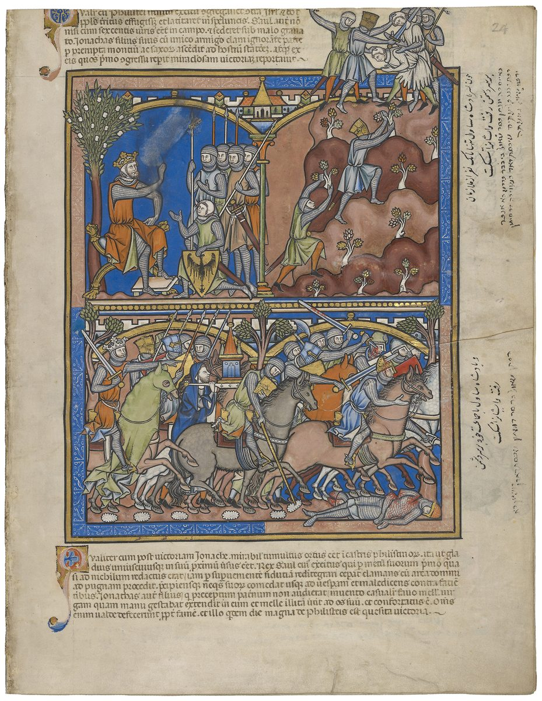

1 Samuel 14 — The Mister Translation

The upper scenes show Saul sitting under the tree with his men (verse 2; the Latin caption above names the pomegranate, malo granato) and Jonathan and his armour-bearer climbing the rocks to the outpost (verses 13–14). The battle below has a shrine carried into the fighting, the painter following the Hebrew’s “ark of God” in verse 18, and the Latin caption beneath goes on to the honey and the curse.

Translator's Notes — verse by verse
The young man who carried his armour. “Jonathan son of Saul said to the young man who carried his armour”: nose kelav, the phrase of Abimelech’s last order, “He quickly called to the young man who carried his armour” (Judges 9:54, now on these pages). “The one who carried his armour” stands in thirteen verses of the Hebrew Bible, seven of them in this chapter and three at Saul’s death on Gilboa (1 Samuel 31:4–6). “But he did not tell his father”: Jonathan acts on his own, as he did at Geba (13:3, now on these pages). Josephus says the two set out in secret to throw the enemy camp into confusion (Antiquities 6.107, numbered 6.6.2 in Whiston). The ASV has “the young man that bare his armor”; the NWT 1984 “the attendant carrying his weapons”; the TLB “his young bodyguard”.
Under the pomegranate with six hundred. Saul sits “at the edge of Gibeah under the pomegranate tree that is in Migron”, with “about six hundred men”. The tree is rimmon, and the last time six hundred Benjamites waited it out, they “fled toward the wilderness, to the rock of Rimmon” (Judges 20:47, now on these pages). Migron appears again in Isaiah’s march of the Assyrian toward Michmash (Isaiah 10:28); the Greek reads “Magdon”. The ASV has “under the pomegranate-tree which is in Migron”; the NIV “on the outskirts of Gibeah under a pomegranate tree in Migron”; the NWT 1984 “at the outskirts of Gibʹe·ah under the pomegranate tree”.
Ahijah, carrying an ephod. With Saul is “Ahijah son of Ahitub, the brother of Ichabod”, the child named for the glory gone into exile (4:21, now on these pages), “son of Phinehas son of Eli, the priest of Jehovah at Shiloh, carrying an ephod”. Carrying the ephod was the priesthood’s charge, “to carry an ephod before me” (2:28; ephod), and the house that was told “I will cut off your arm” (2:31) is still serving the king. Josephus calls him the high priest Echias, a descendant of Eli (Antiquities 6.107). The ASV has “wearing an ephod”; the NWT 1984 “was carrying the ephʹod”; the NIV “who was wearing an ephod”.
Bozez and Seneh. Between the passes stood “a tooth of rock on this side and a tooth of rock on that side”, shen ha-sela, one named Bozez and the other Seneh, one facing Michmash on the north and the other Geba on the south. Seneh has the letters of seneh, the bush that burned at Horeb (Exodus 3:2, now on these pages); what Bozez means is not known. Josephus describes the Philistine camp on a precipice ringed by three sharp crags (Antiquities 6.108). The ASV has “a rocky crag on the one side, and a rocky crag on the other side”; the NWT 1984 “a toothlike crag here on this side”; the Douay “steep cliffs like teeth”.
By many or by few. “Let us cross over to the outpost of these uncircumcised”: “these uncircumcised” stands in three verses of the Hebrew Bible, here and in Saul’s last words and their parallel (1 Samuel 31:4; 1 Chronicles 10:4); Samson’s parents had used the word of the Philistines (Judges 14:3, now on these pages). “Perhaps Jehovah will act for us; for nothing holds Jehovah back from saving by many or by few”: ma’tsor, “a holding back”, and the word stands in one verse of the Hebrew Bible. Gideon’s army was cut down because it was too many (Judges 7:2, now on these pages). The ASV has “for there is no restraint to Jehovah to save by many or by few”; the NWT 1984 “for there is no hindrance to Jehovah to save by many or by few”; the TLB “it makes no difference to him how many enemy troops there are”.
According to your heart. The armour-bearer answers: “Do all that is in your heart; turn as you will; look — I am with you, according to your heart”, kilvavekha. One chapter earlier Samuel told Saul that Jehovah had sought “a man after his own heart”, kilvavo (13:14, now on these pages); “according to your heart” stands in two verses of the Hebrew Bible, here and Psalm 20:5. The Greek reads “as your heart, so my heart”. The ASV has “behold, I am with thee according to thy heart”; the NWT 1984 “Here I am with you in accord with your heart”; the NIV “I am with you heart and soul”.
The sign. Jonathan sets a sign as Gideon did, “give me a sign that it is you who speak with me” (Judges 6:17, now on these pages), and picks the one that sends him uphill: “if they say this, Come up to us, then we will go up, for Jehovah has given them into our hand”. The outpost obliges with a sneer, “Look — Hebrews coming out of the holes where they have hidden themselves” (13:6), and a threat, “Come up to us, and we will teach you something!” Josephus has them promise to punish the two for their daring (Antiquities 6.111). The ASV has “Come up to us, and we will show you a thing”; the NWT 1984 “Come on up to us, and we will let YOU know a thing!”; the NIV “we’ll teach you a lesson”.
Hands and feet, and twenty men. Jonathan climbs “on his hands and on his feet”, and the first blow is “about twenty men, within about half a furrow of a yoke of field”: a tsemed, a yoke, the span a pair of oxen plough (the word of Saul’s “yoke of oxen”, 11:7), and half a furrow of it. The Greek reads “with darts and slingstones and pebbles of the field”, and Josephus says the two fell on the Philistines while they slept (Antiquities 6.113). The ASV has “within as it were half a furrow’s length in an acre of land”; the Douay “which a yoke of oxen is wont to plough in a day”; the NWT 1984 “within about half the plowing line in an acre of field”.
A trembling of God. “There was a trembling in the camp … and the earth shook, and it became a trembling of God”: cherdat Elohim, and the phrase stands in one verse of the Hebrew Bible. “Of God” can also be Hebrew’s way of saying “very great”, and the shelf takes it both ways. Josephus explains the panic: the Philistine army was drawn from many nations, and in the dark its men took one another for enemies (Antiquities 6.114). The ASV has “so there was an exceeding great trembling”; the NWT 1984 “it developed into a trembling from God”; the Douay “it happened as a miracle from God”.
The ark or the ephod. Saul’s watchmen see the multitude melting away; a muster shows Jonathan missing. “And Saul said to Ahijah: Bring the ark of God here. For the ark of God was there that day with the sons of Israel.” The ark had been at Kiriath-jearim for twenty years (7:2, now on these pages) and stays there until David brings it out (2 Samuel 6:2–3). The Greek reads “Bring the ephod, for he carried the ephod that day before Israel”, which matches Ahijah “carrying an ephod” in verse 3. This translation follows the Hebrew and records the Greek; the two readings differ, and the text does not settle it. Josephus has Saul tell the high priest to put on the high-priestly robe and prophesy (Antiquities 6.115, numbered 6.6.3 in Whiston). The ASV has “Bring hither the ark of God”; the NWT 1984 “Do bring the ark of the [true] God near!”; the NIV “Bring the ark of God”.
“Withdraw your hand.” While Saul is still speaking to the priest the tumult in the Philistine camp grows, and he cuts the inquiry off: “Withdraw your hand.” The king who would not wait for Samuel at Gilgal (13:8) now does not wait for the answer. The ASV has “Withdraw thy hand”; the NWT 2013 “Stop what you are doing”; the TLB “Quick! What does God say?”, which reverses the order.
Every man’s sword against his fellow. “And look — every man’s sword was against his fellow, a very great panic”: the clause stands in two verses of the Hebrew Bible, here and at Gideon’s rout of Midian, “Jehovah set each man’s sword against his fellow” (Judges 7:22, now on these pages). The “very great panic”, mehumah, is the panic that struck the Philistine cities when the ark came to them (5:9, now on these pages). The Hebrews who had served in the Philistine camp change sides, and the men hiding in the hill country of Ephraim come out and “clung after them”. The ASV has “behold, every man’s sword was against his fellow, and there was a very great discomfiture”; the NWT 1984 “the rout was very great”; the NIV “striking each other with their swords”.
Jehovah saved Israel that day. “So Jehovah saved Israel that day”: the sentence stands in two verses of the Hebrew Bible, here and at the sea, “So Jehovah saved Israel that day from the hand of Egypt” (Exodus 14:30, now on these pages). The battle passes over to Beth-aven. The Greek adds that about ten thousand men were with Saul, and Josephus has the same number (Antiquities 6.116). The ASV has “So Jehovah saved Israel that day: and the battle passed over by Beth-aven”; the NWT 1984 “And Jehovah proceeded on that day to save Israel”.
Saul’s oath. “The men of Israel were hard pressed that day; and Saul bound the people with an oath”: vayyo’el, from alah, an oath with a curse attached, “Cursed be the man who eats bread before evening, until I have taken vengeance on my enemies.” “Cursed be the man” stands in six verses of the Hebrew Bible, among them the curses of Mount Ebal (Deuteronomy 27:15) and Joshua’s curse on whoever rebuilds Jericho (Joshua 6:26), both now on these pages. In place of “the men of Israel were hard pressed” the Greek reads “And Saul committed a great folly that day”, and Josephus says that Saul, carried away by joy or by ignorance, fell into a deed that deserved much blame (Antiquities 6.116–117). The ASV has “Cursed be the man that eateth any food until it be evening, and I be avenged on mine enemies”; the NWT 1984 “Cursed is the man that eats bread before the evening”; the KJV “that I may be avenged on mine enemies”.
A forest of honey. “All the land came into the forest; and there was honey on the face of the field … and look — a flow of honey.” Ya’ar is the forest, and two verses later it is the honeycomb, ya’rat ha-devash. The Greek has lost the image and says the honey “went on speaking”, apparently reading the letters of “honey” as a form of “speak”. The ASV has “behold, the honey dropped”; the NWT 1984 “there was a dripping of honey”; the NIV “they saw the honey oozing out”.
Brightened eyes. Jonathan “had not heard”; he dipped the tip of his staff in the honeycomb, “and his eyes brightened”. The written text has “saw”, the margin “brightened”, and the Greek “his eyes looked up”. Samson, too, ate honey on the road and said nothing (Judges 14:9, now on these pages). Josephus sets the scene in a deep forest full of bees in the territory of Ephraim (Antiquities 6.118, numbered 6.6.3 in Whiston). The ASV has “and his eyes were enlightened”; the NWT 1984 “his eyes began to beam”; the TLB “he felt much better”.
“My father has brought trouble on the land.” Told of the oath, Jonathan says: “My father has brought trouble on the land”: akhar, Jacob’s word to his sons, “You have brought trouble on me” (Genesis 34:30), Joshua’s to Achan, “Why have you troubled us?” (Joshua 7:25), and Jephthah’s to the daughter his vow would cost him, “you are one of those who trouble me” (Judges 11:35), all now on these pages. Here a father’s oath falls on his own son. “For now the blow among the Philistines has not been great.” The ASV has “My father hath troubled the land”; the NWT 1984 “My father has brought ostracism upon the land”; the TLB “That’s ridiculous!”
Eating with the blood. They struck the Philistines “from Michmash to Aijalon”, and the people were very faint. Then “the people swooped on the spoil” (the written text has “did”, the margin “swooped”), slaughtered sheep and cattle on the ground, “and the people ate with the blood”, al ha-dam, against the law, “You shall not eat anything with the blood” (Leviticus 19:26), “for the blood is the life” (Deuteronomy 12:23), both now on these pages. Josephus says they ate before the blood had been properly washed out (Antiquities 6.120, numbered 6.6.4 in Whiston). The ASV has “and the people did eat them with the blood”; the NWT 1984 “the people fell to eating along with the blood”; the TLB “ate the raw, bloody meat”.
A great stone. Saul says, “You have dealt treacherously; roll a great stone to me today”, and has every man bring his ox to slaughter there, so that the blood drains from the meat. The Greek reads “You have dealt treacherously” as a place name, “in Gethaim”, and has “here” for “today”. The ASV has “ye have dealt treacherously: roll a great stone unto me this day”; the NIV “You have broken faith”; the KJV “Ye have transgressed”.
Saul’s first altar. “And Saul built an altar to Jehovah; it was the first altar that he built to Jehovah”: the Hebrew is “him he began to build, an altar to Jehovah”. Samuel had built his at Ramah (7:17, now on these pages). Josephus says Saul offered a burnt offering on it (Antiquities 6.121). The ASV has “the same was the first altar that he built unto Jehovah”; the NWT 1984 “With it he started altar building to Jehovah”; the Douay “he then first began to build an altar”.
No answer. Saul proposes a night raid; the priest says “Let us draw near here to God”, and “Saul asked of God”, sha’al, the verb of his own name, “But he did not answer him that day.” Josephus names the priest Ahitub (Antiquities 6.122, numbered 6.6.5 in Whiston). The ASV has “But he answered him not that day”; the NWT 1984 “And he did not answer him on that day”; the NIV “But God did not answer him that day”.
The corners of the people. “Come near here, all you corners of the people”: pinnot, the word of the tribes assembled against Gibeah, “the corners of all the people” (Judges 20:2, now on these pages). Saul swears: “even if it is in Jonathan my son, he shall surely die.” “But not a man of all the people answered him”: God does not answer, and the people do not either. Where Saul divides the people, “You shall be on one side”, the Greek reads “you shall be in slavery”, with one letter read differently. The ASV has “Draw nigh hither, all ye chiefs of the people”; the NWT 1984 “all YOU keymen of the people”; the Douay “Bring hither all the corners of the people”.
“Show what is right” — Urim and Thummim. Saul says to Jehovah, havah tamim: “give what is whole, perfect”, here “Show what is right”. With other vowels the same letters are Thummim, the lot that lay with the Urim in the high priest’s breastplate (Exodus 28:30; Urim and Thummim). The Greek has a much longer prayer: “Why have you not answered your servant today? If the guilt is in me or in Jonathan my son, give clear ones; and if it is in your people Israel, give holiness”, the Greek’s names for Urim and Thummim. Many readers think the Hebrew has lost a line here, the eye of a copyist slipping between two places where the same words stood; the Hebrew as it stands is translated, and the readings are left side by side. The ASV has “Show the right”; the KJV “Give a perfect lot”; the NWT 1984 “do give Thumʹmim!”; the NIV “respond with Urim”, following the Greek.
“Cast [lots]” — Jonathan is taken. “Jonathan and Saul were taken, and the people went free.” “Cast [lots] between me and Jonathan my son”: the Hebrew has only “Cast”, with no word for the lot, and the bracket supplies it. “And Jonathan was taken”, lakad, the verb that took Saul at Mizpah (10:20–21) and Achan at Jericho (Joshua 7:18), both now on these pages. The Greek adds that the people protested, “This thing shall not be”, and Saul overruled them. The ASV has “Cast lots between me and Jonathan my son”; the NWT 1984 “CAST lots to decide between me and Jonʹa·than my son”; the TLB “Now draw lots”.
“Here I am; I will die.” “Tell me what you have done”, Saul says, the words Joshua said to Achan, “tell me, please, what you have done” (Joshua 7:19, now on these pages). Jonathan answers: “I did taste a little honey with the tip of the staff that was in my hand. Here I am; I will die.” Saul swears the oath of Eli, “May God do so, and more also” (3:17, now on these pages): “you shall surely die, Jonathan.” Josephus has Jonathan say that he will not beg to be spared (Antiquities 6.127). The ASV has “and, lo, I must die”; the NWT 1984 “Here I am! Let me die!”; the NIV “And now I must die!”
The people ransom Jonathan. The people answer the king: “Shall Jonathan die, who has worked this great salvation in Israel? Far be it!” (chalilah) “Not one hair of his head shall fall to the ground; for with God he has worked this day.” “So the people ransomed Jonathan, and he did not die”: va-yifdu, from padah, the verb of buying back a firstborn. Jephthah’s daughter was not ransomed (Judges 11:39, now on these pages). The Greek reads “the people prayed for Jonathan” and “the people of God has worked this day”, and Josephus too has the people pray to God for the young man (Antiquities 6.128). The ASV has “So the people rescued Jonathan, that he died not”; the NWT 1984 “With that the people redeemed Jonʹa·than”; the NIV “So the men rescued Jonathan”.
Saul takes the kingship. “And Saul took the kingship over Israel”: lakad again, the verb by which he was taken at Mizpah, now of his taking hold of the kingship; the Greek makes it a lot as well, “Saul is taken by lot for the work over Israel”. He fights Moab, Ammon, Edom, “the kings of Zobah” and the Philistines, “and wherever he turned, he condemned them”, yarshia, the verb of a verdict of guilty; the Greek reads “he was saved”. He “struck Amalek”, the enemy of the next chapter. Josephus says he killed about sixty thousand of the enemy and subdued the Ammonites, Moabites, Philistines, Idumaeans, Amalekites and the king of Zobah (Antiquities 6.129, numbered 6.6.6 in Whiston). The ASV has “he put them to the worse”; the NWT 1984 “wherever he would turn he administered condemnation”; the NIV “he inflicted punishment on them”; the TLB “he was successful”.
Saul’s family. His sons are “Jonathan and Ishvi and Malchi-shua”; at his death the sons named are Jonathan, Abinadab and Malchi-shua (1 Samuel 31:2), and Chronicles lists Jonathan, Malchi-shua, Abinadab and Eshbaal (1 Chronicles 8:33). His daughters are Merab and Michal, and his wife Ahinoam daughter of Ahimaaz. Josephus has the sons as Jonathan, Iesous and Melchisos and the daughters as Merobe and Michal (Antiquities 6.129). The ASV has “Now the sons of Saul were Jonathan, and Ishvi, and Malchishua”; the KJV “Jonathan, and Ishui, and Melchishua”; the Douay “Jonathan, and Jessui, and Melchisua”.
Abner son of Ner, Saul’s uncle. “The commander of his army was Abner son of Ner, Saul’s uncle”: the Hebrew leaves open whether the uncle, dod, is Abner or his father Ner. The next verse settles it one way, “Kish was the father of Saul, and Ner the father of Abner was the son of Abiel”: Kish is also “son of Abiel” (9:1, now on these pages), so Ner and Kish are brothers and Abner is Saul’s cousin, as Josephus says (Antiquities 6.130); Chronicles instead says “Ner begot Kish” (1 Chronicles 8:33). The uncle who questioned Saul after his anointing was not named (10:14); Josephus named him Abner. The ASV has “Abner the son of Ner, Saul’s uncle”; the NIV “Abner son of Ner, and Ner was Saul’s uncle”; the Douay “Abner, the son of Ner, the cousin german of Saul”.
He took him to himself. “The war against the Philistines was hard all the days of Saul; and whenever Saul saw any mighty man or any valiant man, he took him to himself”: gibbor and ben chayil. It is what Samuel had warned the king would do, “your sons he will take” (8:11, now on these pages). The ASV has “when Saul saw any mighty man, or any valiant man, he took him unto him”; the NWT 1984 “he would gather him to himself”; the NIV “he took him into his service”.
Patterns worth carrying forward
Where this translation keeps the words exact and distinct: “the young man who carried his armour” and “armour-bearer”, as in Judges 9:54; “carrying an ephod”, as in 2:28; “these uncircumcised”; “according to your heart”, beside 13:14’s “after his own heart”; “a trembling of God”; “the ark of God” in 14:18, as the Hebrew has it; “every man’s sword against his fellow”, as in Judges 7:22; “Jehovah saved Israel that day”, as in Exodus 14:30; “cursed be the man”; “brought trouble” for akhar, as in Genesis 34:30; “with the blood”, as in Leviticus 19:26; “the corners of the people”, as in Judges 20:2; “Show what is right” for havah tamim; “Cast [lots]”, the noun supplied in brackets; “taken” for lakad; “ransomed” for padah; and “Saul’s uncle”.
Echoes paid. Jonathan of 13:3 climbs to the outpost of 13:23; Ichabod’s brother of 4:21 carries the ephod; the six hundred sit under a rimmon as at Judges 20:47; the armour-bearer’s “according to your heart” answers 13:14; the uncle of 10:14 meets Abner son of Ner; and Samuel’s “your sons he will take” (8:11) comes true.
Echoes planted. Amalek (1 Samuel 15, now on these pages); Michal and Merab (1 Samuel 18, now on these pages); the ephod brought to David (1 Samuel 23:9) and Saul unanswered again (1 Samuel 28:6), both now on these pages; and the armour-bearer and “these uncircumcised” at Saul’s death (1 Samuel 31:4).
Next in this book: 1 Samuel 15 — Saul and Amalek: the order to devote everything to destruction, Agag and the best of the flock spared, “to obey is better than sacrifice”, the torn robe, and Samuel hewing Agag in pieces at Gilgal.